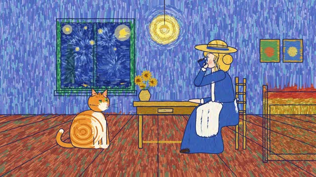

让健康知识
听得懂，信得过。
先核对医学事实与证据，再确定观众、核心问题和表达方式。画面要讲清机制，成片要核对字幕、配音与风险边界。
- 核对事实明确来源、适用人群与不确定性。
- 写清脚本一支片子先回答一个真正的问题。
- 按稿制作选择合适画风，确认样张再制作。
- 逐项验收事实、声音、画面和片尾一起核对。
我用来做视频的一张工作台。收好值得参考的画风、动效与工作流，选中喜欢的，把制作需求交给 AI。

花叔的两套工具在前；我的两套创作流程在后。
点画面或标题看详情；点收藏，把想法加入制作清单。
换个词，或清除筛选继续看看。
两套自己用过的流程，整理成可携带的 Skill。
先核对医学事实与证据，再确定观众、核心问题和表达方式。画面要讲清机制，成片要核对字幕、配音与风险边界。
从立意、受众与节奏开始，把脚本拆成可以制作的镜头。用关键画面确认方向，再把配音、音乐和剪辑合在一起。
直接在网页看；作为独立 Skill 使用；或和涛生的其他 Skills 一起安装。内容来自同一份固定快照。
看板本身不生成视频、不安装第三方技能。收藏保存在当前浏览器；制作需求由你主动复制。外部演示在点击后访问原作者网站，部分内容需联网。医学流程是创作与核验方法，不能替代具体就医判断。